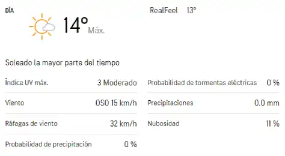

Pronostico para mañana
El pronostico para mañana en detalle.
El pronostico para mañana en detalle.
El pronostico en tu zona para pasado mañana al detalle.
Si necesitas saber como va a estar el pronostico el resto de la semana, lo vas a poder ver al detalle.
Este viernes 22 de julio, la Organización Meteorológica Mundial dio a conocer un nuevo informe del "Estado del clima en América Latina y el Caribe". ¿Cuáles son las novedades con respecto al cambio climático en estas regiones?
En 2021 continuó la tendencia al aumento de la temperatura global, año que se situó entre el quinto y el séptimo más cálido desde que se tienen registros —informa la Organización Meteorológica Mundial (OMM)—, y hace énfasis en la situación de América Latina y el Caribe, que experimentó una tendencia análoga.
A esto se suma que 2021 fue el séptimo año consecutivo en el que se formó una tormenta tropical antes del inicio de temporada de huracanes en el Atlántico, siendo esta la tercera más activa jamás registrada, con 21 tormentas con nombre.
El principal objetivo del informe El estado del clima en América Latina y el Caribe 2021, presentado este viernes 22 por la OMM, es el de promover “la consolidación y la ampliación de los sistemas de alerta temprana a través de las predicciones que tienen en cuenta los impactos y las alertas de fenómenos meteorológicos, hidrológicos y climáticos extremos basadas en los riesgos.”
El informe revela que lo primero a tener en cuenta es que la tasa promedio del aumento de temperatura en la región fue de 0,2 °C por década entre 1991 y 2021, comparado con el aumento de 0,1 °C por década en el período 1961-1990: aunque parezca una diferencia pequeña, es muy significativa, evidencia el Dr. Wenjian Zhang, Subsecretario General de la OMM. "En 2021, la temperatura media con respecto a la referencia de 1981-2010 fue 0,5 °C más cálida en México, 0,35 °C más cálida en América Central y 0,36 °C más cálida en América del Sur", revela el informe.
A diferencia de la distribución homogénea del calentamiento, la precipitación puede variar bastante en una misma región. Y esto ocurre sobre todo en América Latina, que se presentan precipitaciones sobre lo normal en Colombia o en el Amazonas central; sin embargo, en zonas como en la cuenca del Paraná-La Plata o en la mayor parte de Chile, se encuentran bajo lo normal. En efecto, se destaca principalmente la sequía extrema que vive Chile hace 15 años.
Por otro lado, los glaciares de Los Andes han retrocedido durante décadas: estas tasas observadas de pérdida de masa de los glaciares figuran entre las tasas de pérdida de masa regionales más altas a nivel mundial.
¿Que se puede hacer ante esta crisis? El informe destaca que "la reducción del riesgo de desastres es fundamental para la justicia climática y el desarrollo resistente al clima". En América Central y América del Sur "se necesitan servicios climáticos, sistemas de alerta temprana de extremo a extremo e inversiones sostenibles" que ayuden a enfrentar los riesgos relativos a eventos extremos como olas de calor o inundaciones.